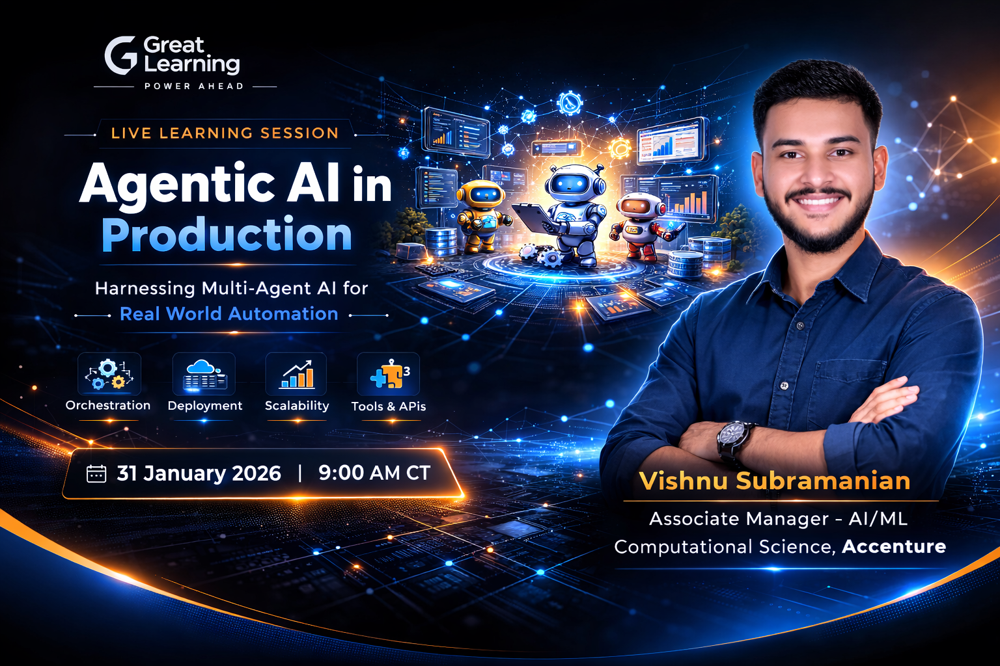

Representation Stability in Minimal Continual Learning Agents
An investigation into how stable internal representations can emerge in a minimal continual learning agent.
This site is part of a much larger experiment I'm calling Project X.
Ever since I was a kid, I've had a deep, burning desire to pursue the path of a true polymath: conducting exploratory research (and eventually development) across multiple scientific and engineering disciplines.
Some of the domains currently driving that curiosity include:
This list is not fixed. It is expected to evolve as interests deepen, intersect, and compound.
But Project X is not just about breadth of knowledge. It is about structuring learning itself.
The system is organized into six interconnected tracks:
A structured, mathematically grounded academic spine. Notes, problem sets, derivations, and long-form technical write-ups live here.
Extraction of first principles about learning itself: abstraction, generalization, compression, representation, iteration. This is where meta-learning theory is distilled into research artifacts.
An evolving “baby_agent” codebase that ingests inputs, runs experiments, and produces measurable outputs. This is where theory meets implementation.
Formal research papers derived from X.3 experiments. These are published artifacts — versioned, citable, and public.
An applied extension exploring decision systems in financial environments, emphasizing disciplined experimentation and engineering rigor.
The integrator. This track consumes outputs from X.1 through X.5 and proposes improvements to the learning agents and trading agents themselves.
This is the attempt to close the loop 🔄
A grounded exploration of Recursive Self-Improvement (RSI) as an engineering discipline — disciplined, reviewable, pull-request–based iteration.
Over time, autonomous agents will:
with human review acting as the alignment and safety layer.
As knowledge accumulates across disciplines 📚, the agents gain access to a richer conceptual substrate.
As the agents improve, they refine how that knowledge is structured and integrated. The feedback loop strengthens 🔁
If successful, the system approaches a state where the rate of learning itself improves over time ⬆️ — constrained primarily by compute, context limits, and disciplined execution.
This website is hence an evolving substrate for:
Where this ultimately leads is impossible to predict.
What is already in motion, however, is a growing stack of notes, repositories, experiments, and research artifacts — all feeding back into how these agents learn and improve.
Five years ago, this would have been dismissed as fantasy. Today, it is an engineering problem 🛠️
That speaks volumes about how quickly the AI industry has advanced.
True RSI or not, this is easily the most ambitious — and most fun — system I’ve ever tried to build.
Let’s see how far it goes 🚀
[2026-02-17] — 🧪 X.4 Milestone
Published the first research paper from X.4 — Agent Learning Research Paper Track: Representation Stability in a Minimal Continual Learning Agent. This marks the first formal research output derived from the evolving agent experimentation pipeline.
[2026-02-11] — 🚧 Repository Foundation
Established the public Project X structure (X.1–X.6) and deployed the first version of this site via GitHub Pages.

A learning session for working professionals exploring (through a sample use case) the deployment of Agentic AI systems in real-world prod environments.
I'm now publishing outputs from this project!
An investigation into how stable internal representations can emerge in a minimal continual learning agent.